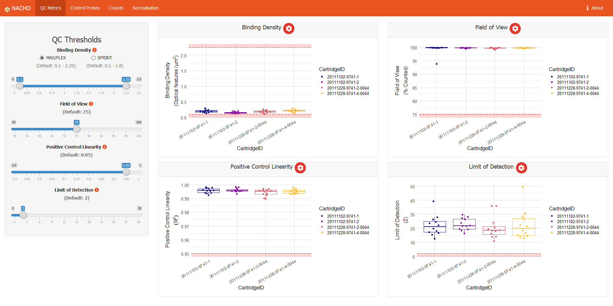

Installation
# Install NACHO from CRAN:
install.packages("NACHO")
# Or the development version from GitHub:
# install.packages("pak")
pak::pak("mcanouil/NACHO")Overview
NACHO (NAnoString quality Control dasHbOard) is developed for NanoString nCounter data.
NanoString nCounter data is a messenger-RNA/micro-RNA (mRNA/miRNA) expression assay and works with fluorescent barcodes.
Each barcode is assigned an mRNA/miRNA, which can be counted after bonding with its target.
As a result each count of a specific barcode represents the presence of its target mRNA/miRNA.
NACHO is able to load, visualise and normalise the exported NanoString nCounter data and facilitates the user in performing a quality control.
NACHO does this by visualising quality control metrics, expression of control genes, principal components and sample specific size factors in an interactive web application.
With the use of two functions, RCC files are summarised and visualised, namely: load_rcc() and visualise().
- The
load_rcc()function is used to preprocess the data. - The
visualise()function initiates a Shiny-based dashboard that visualises all relevant QC plots.
NACHO also includes a function normalise(), which (re)calculates sample specific size factors and normalises the data.
- The
normalise()function creates a list in which your settings, the raw counts and normalised counts are stored.
In addition (since v0.6.0) NACHO includes two (three) additional functions:
- The
render()function renders a full quality-control report (HTML) based on the results of a call toload_rcc()ornormalise()(usingprint()in an R Markdown chunk). - The
autoplot()function draws any quality-control metrics fromvisualise()andrender().
For more vignette("NACHO") and vignette("NACHO-analysis").
Shiny Application (demo)
shiny::runApp(system.file("app", package = "NACHO"))
visualise(GSE74821)
Citing NACHO
Canouil M, Bouland GA, Bonnefond A, Froguel P, ’t Hart LM, Slieker RC (2019). “NACHO: an R package for quality control of NanoString nCounter data.” Bioinformatics. ISSN 1367-4803. doi:10.1093/bioinformatics/btz647.
@Article{,
title = {{NACHO}: an {R} package for quality control of {NanoString} {nCounter} data},
author = {Mickaël Canouil and Gerard A. Bouland and Amélie Bonnefond and Philippe Froguel and Leen M. {'t Hart} and Roderick C. Slieker},
journal = {Bioinformatics},
address = {Oxford, England},
year = {2019},
month = {aug},
issn = {1367-4803},
doi = {10.1093/bioinformatics/btz647},
}Getting help
If you encounter a clear bug, please file a minimal reproducible example on GitHub.
For questions and other discussion, please contact the package maintainer.
Code of Conduct
Please note that this project is released with a Contributor Code of Conduct.
By contributing to this project, you agree to abide by its terms.